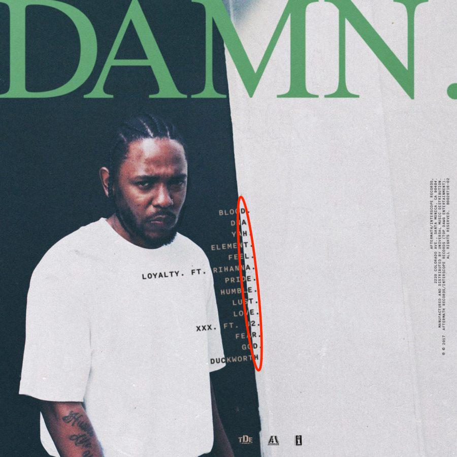
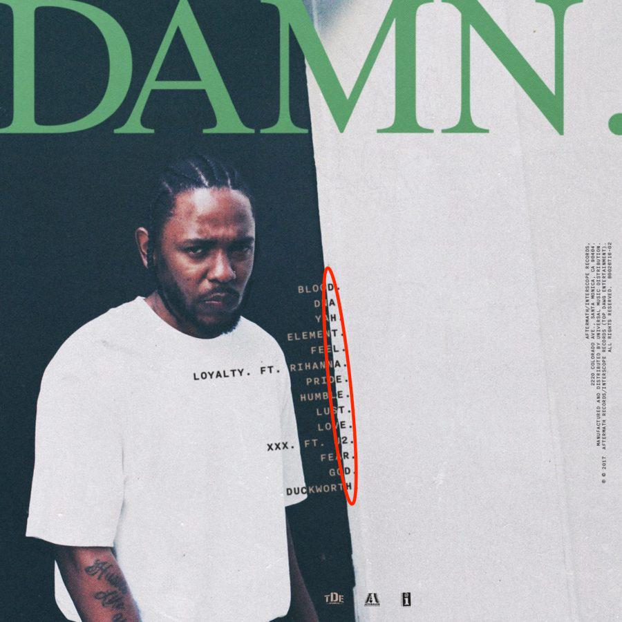

Pride - Kendrick Lamar
Capa do album
 

Musica: Pride
Artista: Kendrick Lamar
Album: Damn
Ano em que a musica foi lançada: 2017
Pride é uma música do álbum DAMN. de Kendrick Lamar, lançada em 2017. Na música, Kendrick reflete sobre sua própria jornada e tenta reconciliar sua fé com as tentações e desafios da vida. Ele examina sua própria humanidade, explorando temas de orgulho, ego e espiritualidade. A produção musical apresenta uma mistura de batidas atmosféricas e letras introspectivas, criando uma atmosfera melancólica e reflexiva. Pride é uma das faixas mais elogiadas do álbum "DAMN.", destacando-se por sua profundidade lírica e sonoridade única
Musica
Clique duas vezes para ver a Letra
Love's gonna get you killed
But pride’s gonna be the death of you and you and me
And you and you and you and me
And you and you and you and me
And you and you and you and me and—
Me, I wasn't taught to share, but care
In another life, I surely was there
Me, I wasn't taught to share, but care
I care, I care
Hell-raising, wheel-chasing, new worldly possessions
Flesh-making, spirit-breaking, which one would you lessen?
The better part, the human heart, you love ’em or dissect 'em
Happiness or flashiness? How do you serve the question?
See, in a perfect world, I would be perfect, world
I don't trust people enough beyond they surface, world
I don't love people enough to put my faith in man
I put my faith in these lyrics, hoping I make a band
I understand I ain't perfect, I probably won't come around
This time I might put you down
Last time I ain't give a fuck, I still feel the same now
My feelings might go numb, you're dealin’ with cold thumb
I’m willin' to give up a leg and arm to show empathy from
Pity parties and functions of you and yours
A perfect world, you probably live another 24
I can’t fake humble just 'cause your ass is insecure
I can't fake humble just 'cause your ass is insecure
Me, I wasn’t taught to share, but care
In another life, I surely was there
Me, I wasn't taught to share, but care
I care, I care
Maybe I wasn't there (We saw you first)
Maybe I wasn't there (I saw you first)
Maybe I wasn't there (I saw you first)
Maybe I wasn't there
Now, in a perfect world, I probably won't be insensitive
Cold as December but never remember what winter did
I wouldn't blame you for mistakes I made or the bed I laid
Seems like I point the finger just to make a point nowadays
Smiles and cold stares, the temperature goes there
Indigenous disposition, feel like we belong here
I know the walls, they can listen, I wish they could talk back
The hurt becomes repetition, the love almost lost that
Sick venom in men and women overcome with pride
A perfect world is never perfect, only filled with lies
Promises are broken and more resentment come alive
Race barriers make inferior of you and I
See, in a perfect world, I'll choose faith over riches
I'll choose work over bitches, I'll make schools out of prison
I'll take all the religions and put 'em all in one service
Just to tell 'em we ain't shit, but He's been perfect, world
Me, I wasn't taught to share, but care
In another life, I surely was there
Me, I wasn't taught to share, but care
I care, I care
Maybe I wasn't there (We saw you first)
Maybe I wasn't there (I saw you first)
Maybe I wasn't there (I saw you first)
Maybe I wasn't there